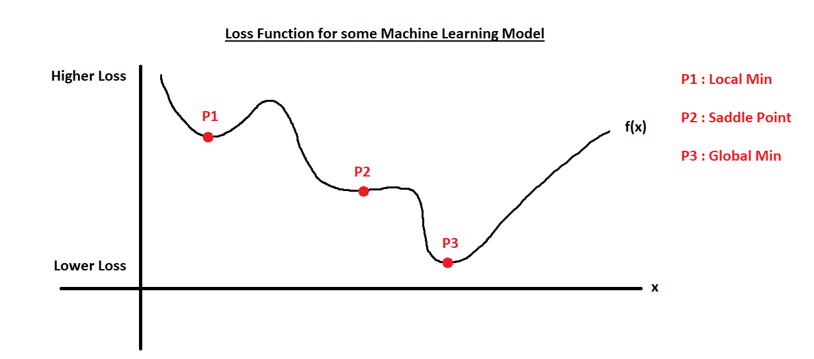
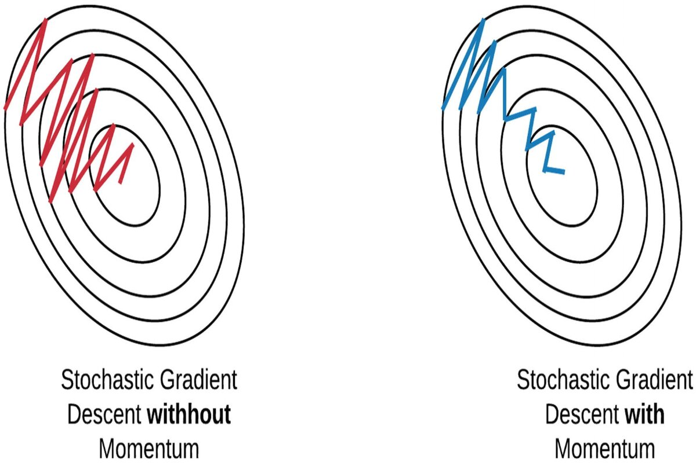
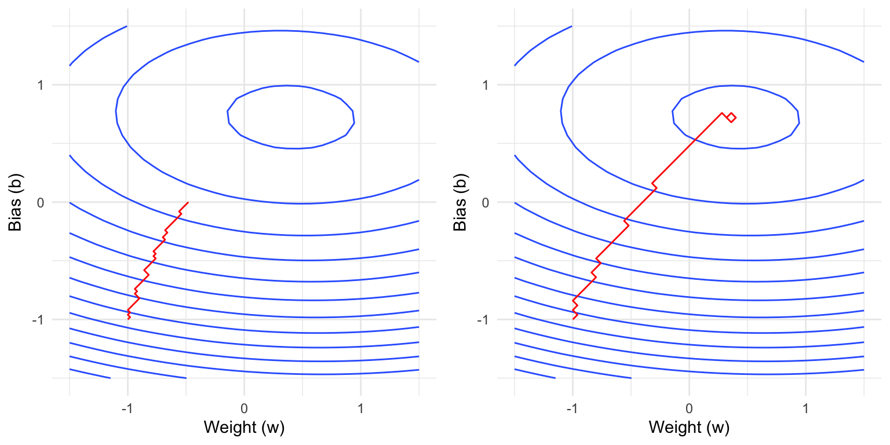
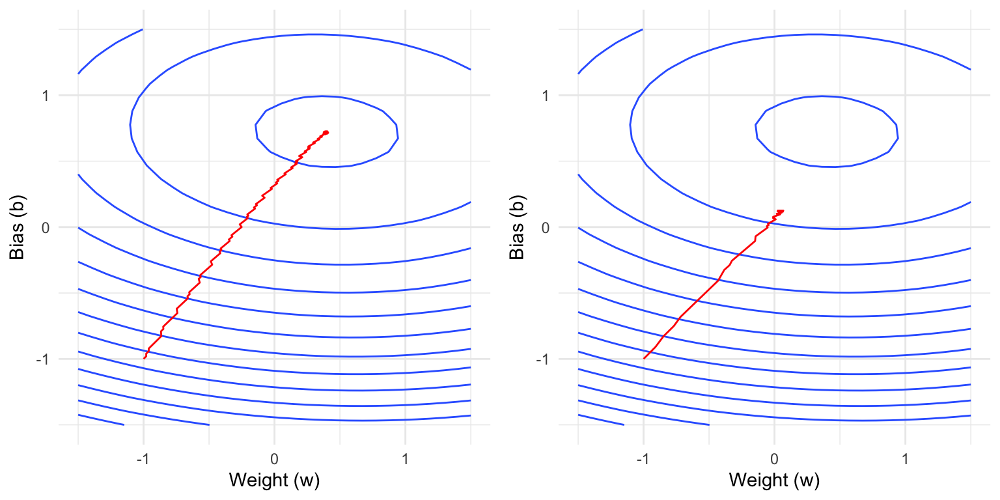
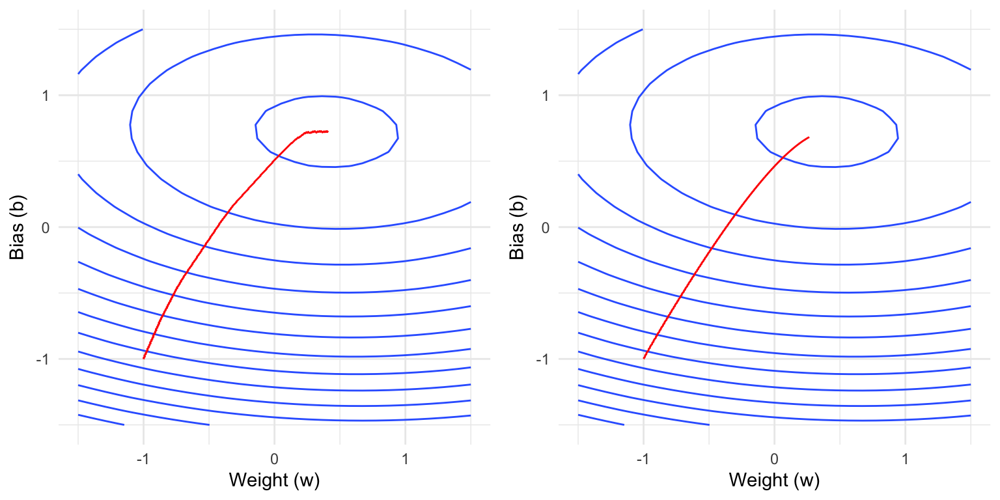
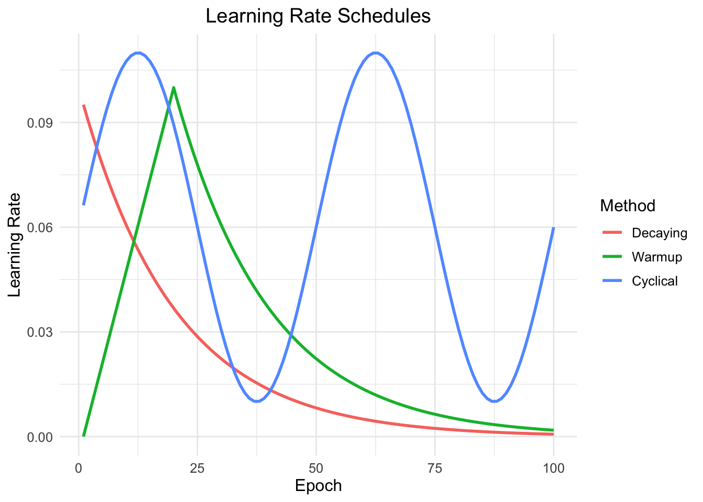
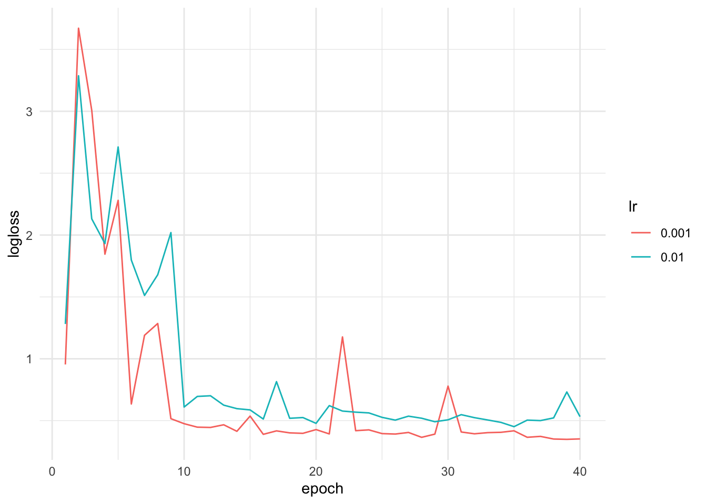

library(torch)
formals(optim_adamw)$params
$lr
[1] 0.001
$betas
c(0.9, 0.999)
$eps
[1] 1e-08
$weight_decay
[1] 0.01
$amsgrad
[1] FALSEIn this notebook, we will cover the optimization aspect of deep learning and how to work with optimizers in torch. Optimizers are algorithms that iteratively adjust the parameters of a neural network to minimize the loss function during training. They define how the networks learn from the data.
Let’s denote with \(L(\theta)\) the loss function, which assigns the empirical risk given data \(\{(x_i, y_i)\}_{i = 1}^n\) to a parameter vector \(\theta\): \[L(\theta) = \sum_{i=1}^n L(f_\theta(x_i), y_i)\] Here, \(f_\theta\) is the model’s prediction function, \(x_i\) is the \(i\)-th sample in the training data, and \(y_i\) is the corresponding target value.
The goal of the optimizer is to find the parameter vector \(\theta^*\) that minimizes the loss function \(L(\theta)\): \[\theta^* = \arg \min_\theta L(\theta)\]
This is done by iteratively updating the parameter vector \(\theta\) using the gradient of the loss function with respect to the parameter vector. The simplified update formula for a parameter \(\theta\) at time step \(t\) is given by:
\[\theta_{t+1} = \theta_t - \eta \frac{\partial L}{\partial \theta_t}\]
Where:
Question 1: Can you explain what happens when the learning rate is too high? What happens when it is too low?
 Source: https://stackoverflow.com/questions/62690725/small-learning-rate-vs-big-learning-rate
Source: https://stackoverflow.com/questions/62690725/small-learning-rate-vs-big-learning-rate
The optimizers used in practice differ from the above formula, as:
Before we cover these more advanced approaches (specifically their implementation in AdamW), we will first focus on the vanilla version of Stochastic Gradient Descent (SGD).
When using mini-batches, the gradient becomes a noisy estimate of the gradient over the full dataset. With \(\nabla L^i_t := \frac{\partial L^i}{\partial \theta_t}\) being the gradient of the loss function with respect to the entire parameter vector estimated using \((x_i, y_i)\), the mini-batch gradient is given by:
\[\nabla L^B_t = \frac{1}{|B|} \sum_{i \in B} \nabla L^i_t\]
where \(B\) is the batch of samples and \(|B|\) is the batch size.
The update formula for SGD is then given by:
\[\theta_{t+1} = \theta_t - \eta \nabla L^B_t\]
This is visualized in the image below:

Question 1: What happens when the batch size is too small or too large?
Trade-offs with Batch Size:
Question 2: The mini-batch gradient is an approximation of the gradient over the full dataset. Does the latter also approximate something? If so, what?
In machine learning, we assume that the data is drawn from a distribution \(P\). The gradient over the full dataset is an expectation over this distribution:
\[\nabla L = \mathbb{E}_{x \sim P} \nabla L(f_\theta(x), y)\]
The mini-batch gradient is an empirical estimate of this gradient, i.e., the expectation over a finite sample from the distribution.Because deep learning models can have many parameters and computing gradients is expensive, understanding the effects of different batch sizes and convergence is important. The computational cost (which we define as the time it takes to perform one optimization step) of a gradient update using a batch size \(b\) consists of:
We will discuss point 1 later, and point 4 does not depend on the batch size, so we can ignore it.
Question 1: True or False: The cost of performing a gradient update using a batch size of \(2\) is twice the cost of a batch size of \(1\).
Question 2: The standard error of the mini-batch gradient estimate (which characterizes the precision of the gradient estimate) can be written as:
\[\text{SE}_{\nabla L^B_t} = \frac{\sigma_{\nabla L_t}}{\sqrt{|B|}}\]
where \(\sigma_{\nabla L_t}\) is the standard deviation of the gradient estimate relative to the batch size.
Describe the dynamics of the standard error when increasing the batch size: How do you need to increase a batch size from \(1\) to achieve half the standard error? What about increasing a batch size from \(100\)?
The standard error decreases as the batch size increases, but with diminishing returns. To halve the standard error:
As we have now covered some of the dynamics of a simple gradient-based optimizer, we can examine the final parameter vector \(\theta^*\) that the optimizer converges to. When using a gradient-based optimizer, the updates will stop once the gradient is close to zero. We will now discuss the type of solutions where this is true and their properties.
We need to distinguish saddle points from local minima from global minima:

In deep learning, where high-dimensional parameter spaces are common, saddle points are more likely to occur than local minima [@dauphin2014identifying]. However, due to the stochastic nature of SGD, optimizers will find local minima instead of saddle points @pmlr-v80-daneshmand18a.
Question 1: Do you believe SGD will find local or global minima? Explain your reasoning.
Question 2: Assuming we have found a \(\theta^*\) that has low training loss, does this ensure that we have found a good model?
SGD has been empirically shown to find solutions that generalize well to unseen data. This phenomenon is attributed to the implicit regularization effects of SGD, where the noise introduced by mini-batch sampling helps guide the optimizer towards broader minima with smaller L2 norms. These broader minima are typically associated with better generalization performance compared to sharp minima.

Source: https://www.researchgate.net/figure/Flat-minima-results-in-better-generalization-compared-to-sharp-minima-Pruning-neural_fig2_353068686
These properties are also known as implicit regularization of SGD. Regularization generally refers to techniques that prevent overfitting and improve generalization. There are also explicit regularization techniques, which we will cover next.
Because weight decay in SGD is equivalent to adding a regularization penalty term to the loss function, we can draw a parallel to the regularization techniques used in statistics such as ridge regression. Regularization in machine learning/statistics is used to prevent overfitting by adding a penalty term to the model’s loss function, which discourages overly complex models that might fit noise in the training data. It helps improve generalization to unseen data. For example, in ridge regression, the regularization term penalizes large coefficients by adding the squared magnitude of the coefficients to the loss function:
\[ \mathcal{L}(y, \hat{y}) = \sum_{i=1}^n \left(y_i - \hat{y}_i\right)^2 + \lambda \sum_{j=1}^p \beta_j^2 \]
This will make the model prefer less complex solutions, where complexity is measured by the L2 norm of the coefficients.
For more complex optimizers such as Adam, weight decay is not equivalent to adding a regularization penalty term to the loss function. However, the main idea of both approaches is still to shrink the weights to \(0\) during training.
Here, \(\lambda\) controls the strength of the regularization, \(y_i\) are the observed values, \(\hat{y}_i\) are the predicted values, and \(w_i\) are the model coefficients.
If we integrate weight decay into the gradient update formula, we get the following:
\[\theta_{t+1} = \theta_t - \eta \big(\frac{\partial L}{\partial \theta_t} - \lambda \theta_t\big)\]
This formula shows that the weight decay term (\(- \lambda \theta_t\)) effectively shrinks the weights during each update, helping to prevent overfitting.

Momentum is a technique that helps accelerate gradient descent by using an exponential moving average of past gradients. Like a ball rolling down a hill, momentum helps the optimizer:
The exponential moving momentum update can be expressed mathematically as:
\[ (1 - \beta) \sum_{\tau=1}^{t} \beta^{t-\tau} \nabla_{\theta} \mathcal{L}(\theta_{\tau-1}) \]
In order to avoid having to keep track of all the gradients, we can calculate the update in two steps as follows:
\[ v_t = \beta_1 v_{t-1} + (1 - \beta_1) \nabla_\theta L(\theta_t) \]
\[ \theta_{t+1} = \theta_t - \eta \frac{v_t}{1 - \beta_1^t} \]
The hyperparameter \(\beta_1\) is the momentum decay rate (typically 0.9), \(v_t\) is the exponential moving average of gradients, and \(\eta\) is the learning rate as before. Note that dividing by \(1 - \beta_1^t\) counteracts a bias because \(v_0\) is initialized to \(0\).

Adaptive learning rate methods automatically adjust the learning rate for each parameter during training. This is particularly useful because:
Before, we had one global learning rate \(\eta\) for all parameters. However, learning rates are now allowed to:
Our vanilla SGD update formula is now generalized to handle adaptive learning rates:
\[\theta_{t+1} = \theta_t - \eta_t \cdot \frac{\nabla_\theta L(\theta_t)}{\sqrt{v_t} + \epsilon}\]
Here, \(\eta_t\) is now not a scalar learning rate, but a vector of learning rates for each parameter, and ‘\(\cdot\)’ denotes the element-wise multiplication. Further, \(\epsilon\) is a small constant for numerical stability.
In AdamW, the adaptive learning rate is controlled by the second moment estimate (squared gradients):
\[v_t = \beta_2 v_{t-1} + (1-\beta_2)(g_t)^2\] \[\hat{\eta}_t = \eta \frac{1}{\sqrt{v_t + \epsilon}}\]
In words, this means: In steep directions where the gradient is large, the learning rate is small and vice versa. The parameters \(\beta_2\) and \(\epsilon\) are hyperparameters that control the decay rate and numerical stability of the second moment estimate.

When combining weight decay, adaptive learning rates, and momentum, we get the AdamW optimizer. It therefore has parameters:
lr: The learning rate.weight_decay: The weight decay parameter.betas: The momentum parameters (\(\beta_1\) and \(\beta_2\)).eps: The numerical stability parameter.Note that AdamW also has another configuration parameter amsgrad, which is disabled by default in torch, but which can help with convergence.
torch provides several common optimizers, including SGD, Adam, AdamW, RMSprop, and Adagrad. The main optimizer API consists of:
step(): Update parameters using current gradients.zero_grad(): Reset gradients of all the parameters to zero before each backward pass.nn_modules, they have a $state_dict() which can, for example, be saved to later load it using $load_state_dict().We will focus on the AdamW optimizer, but the others work analogously.
library(torch)
formals(optim_adamw)$params
$lr
[1] 0.001
$betas
c(0.9, 0.999)
$eps
[1] 1e-08
$weight_decay
[1] 0.01
$amsgrad
[1] FALSETo construct it, we first need to create a model and then pass the parameters of the model to the optimizer so it knows which parameters to optimize.
model = nn_linear(1, 1)
opt <- optim_adamw(model$parameters, lr = 0.2)To illustrate the optimizer, we will again generate some synthetic training data:
torch_manual_seed(1)
X = torch_randn(1000, 1)
beta = torch_randn(1, 1)
Y = X * beta + torch_randn(1000, 1) * 2This represents data from a simple linear model with some noise:

Performing a (full) gradient update using the AdamW optimizer consists of:
Calculating the forward pass
y_hat = model(X)Calculating the loss
loss = mean((y_hat - Y)^2)Performing a backward pass
loss$backward()Applying the update rule
NULLNote that after the optimizer step, the gradients are not reset to zero but are unchanged.
model$weight$gradtorch_tensor
0.5993
[ CPUFloatType{1,1} ]If we were to perform another backward pass, the gradient would be added to the current gradient. If this is not desired, we can set an individual gradient of a tensor to zero:
model$weight$grad$zero_()torch_tensor
0
[ CPUFloatType{1,1} ]Optimizers also offer a convenient way to set all gradients of the parameters managed by them to zero using $zero_grad():
opt$zero_grad()
model$weight$gradtorch_tensor
0
[ CPUFloatType{1,1} ]We will now show some real trajectories of the AdamW optimizer applied to the linear regression problem from above where one specific parameter is varied. Recall that:
The plots below show contour lines of the empirical loss function, i.e., two values that are on the same contour line have the same loss.
Question 1: Which parameter is varied here? Explain your reasoning.

Question 2: Which parameter is varied below? Explain your reasoning.

Question 3: Which parameter is varied below? Explain your reasoning. Can you explain why this happens?

Question 4: Which parameter is varied below? Explain your reasoning.

While we have already covered dynamic learning rates, it can still be beneficial to use a learning rate scheduler to further improve convergence. There, the learning rate is not a constant scalar, but a function of the current epoch. The update formula for the simple SGD optimizer is now:
\[\theta_{t+1} = \theta_t - \eta_t \cdot \frac{\nabla_\theta L(\theta_t)}{\sqrt{v_t} + \epsilon}\]
Decaying learning rates:
This includes gradient decay, cosine annealing, and cyclical learning rates. The general idea is to start with a high learning rate and then gradually decrease it over time.
Warmup:
Warmup is a technique that gradually increases the learning rate from a small value to a larger value over a specified number of epochs. For an explanation of why warmup is beneficial, see @kalra2024warmup.
Cyclical Learning Rates:
Cyclical learning rates are a technique that involves periodically increasing and decreasing the learning rate. This can help the optimizer to traverse saddle points faster and find better solutions.

In torch, learning rate schedulers are prefixed by lr_, such as the simple lr_step, where the learning rate is multiplied by a factor of gamma every step_size epochs. In order to use them, we need to pass the optimizer to the scheduler and specify additional arguments.
scheduler = lr_step(opt, step_size = 2, gamma = 0.1)The main API of a learning rate scheduler is the $step() method, which updates the learning rate. For some schedulers, this needs to be called after each optimization step, for others after each epoch. You can find this out by consulting the documentation of the specific scheduler.
opt$param_groups[[1L]]$lr[1] 0.2scheduler$step()
opt$param_groups[[1L]]$lr[1] 0.2scheduler$step()
opt$param_groups[[1L]]$lr[1] 0.02Arguably the most important hyperparameter is the learning rate. While we have now discussed the dynamics of the optimizer hyperparameters, the primary practical concern is how to set them. As a start, one can see whether good results can be achieved with the default hyperparameters. Alternatively, one can look at how others (e.g., in scientific papers) have set the hyperparameters for similar architectures and tasks.
When setting the learning rate, it is a good idea to then inspect the loss over time to see whether the learning rate is too high (instability) or too low (slow convergence). Below, we show the learning curve for two different learning rates.
library(mlr3torch)Loading required package: mlr3Loading required package: mlr3pipelinesepochs = 40
l1 = lrn("classif.mlp", batch_size = 32, epochs = epochs, opt.lr = 0.01, callbacks = t_clbk("history"), measures_train = msr("classif.logloss"), predict_type = "prob", neurons = 100)
l2 = lrn("classif.mlp", batch_size = 32, epochs = epochs, opt.lr = 0.001, callbacks = t_clbk("history"), measures_train = msr("classif.logloss"), predict_type = "prob", neurons = 100)
task = tsk("spam")
l1$train(task)
l2$train(task)
d = data.frame(
epoch = rep(1:epochs, times = 2),
logloss = c(l1$model$callbacks$history$train.classif.logloss, l2$model$callbacks$history$train.classif.logloss),
lr = rep(c("0.01", "0.001"), each = epochs)
)
ggplot(d, aes(x = epoch, y = logloss, color = lr)) +
geom_line() +
theme_minimal()
When no good results can easily be achieved with defaults or with learning rates from the literature, one can employ hyperparameter optimization to find good learning rates. It is recommended to tune the learning rate on a logarithmic scale.
In order to resume training at a later stage, we can save the optimizer’s state using $state_dict().
state_dict = opt$state_dict()This state dictionary contains:
$param_groups which contains the parameters and their associated hyperparameters.$state which contains the optimizer’s internal state, such as the momentum and second moment estimates.state_dict$param_groups[[1L]]$params
[1] 1 2
$lr
[1] 0.02
$betas
[1] 0.900 0.999
$eps
[1] 1e-08
$weight_decay
[1] 0.01
$amsgrad
[1] FALSE
$initial_lr
[1] 0.2It is possible to set different parameters (such as learning rate) for different parameter groups.
o2 = optim_adamw(list(
list(params = torch_tensor(1), lr = 1),
list(params = torch_tensor(2), lr = 2)
))
o2$param_groups[[1L]]$lr[1] 1o2$param_groups[[2L]]$lr[1] 2The $state field contains the state for each parameter, which is currently empty as we have not performed any updates yet.
state_dict$state$`1`
$`1`$step
torch_tensor
1
[ CPUFloatType{} ]
$`1`$exp_avg
torch_tensor
0.01 *
5.9926
[ CPUFloatType{1,1} ]
$`1`$exp_avg_sq
torch_tensor
0.0001 *
3.5912
[ CPUFloatType{1,1} ]
$`2`
$`2`$step
torch_tensor
1
[ CPUFloatType{} ]
$`2`$exp_avg
torch_tensor
0.01 *
2.1779
[ CPUFloatType{1} ]
$`2`$exp_avg_sq
torch_tensor
1e-05 *
4.7433
[ CPUFloatType{1} ]step = function() {
opt$zero_grad()
((model(torch_tensor(1)) - torch_tensor(1))^2)$backward()
opt$step()
}
replicate(step(), n = 2)After performing two steps, the state dictionary contains the state for each parameter:
opt$state_dict()$state[["1"]]$step
torch_tensor
3
[ CPUFloatType{} ]
$exp_avg
torch_tensor
-0.6202
[ CPUFloatType{1,1} ]
$exp_avg_sq
torch_tensor
0.01 *
2.5144
[ CPUFloatType{1,1} ]Just like for the nn_module, we can save the optimizer state using torch_save().
pth = tempfile(fileext = ".pth")
torch_save(state_dict, pth)Generally, we don’t want to save the whole optimizer, as this also contains the weight tensors of the model that one usually wants to save separately.
state_dict2 = torch_load(pth)
opt2 <- optim_adamw(model$parameters, lr = 0.2)
opt2$load_state_dict(state_dict2)